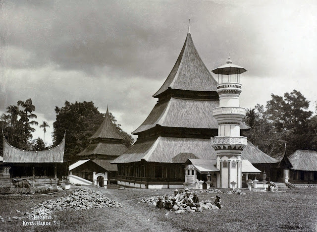
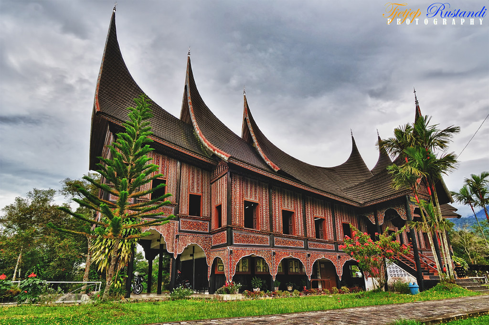
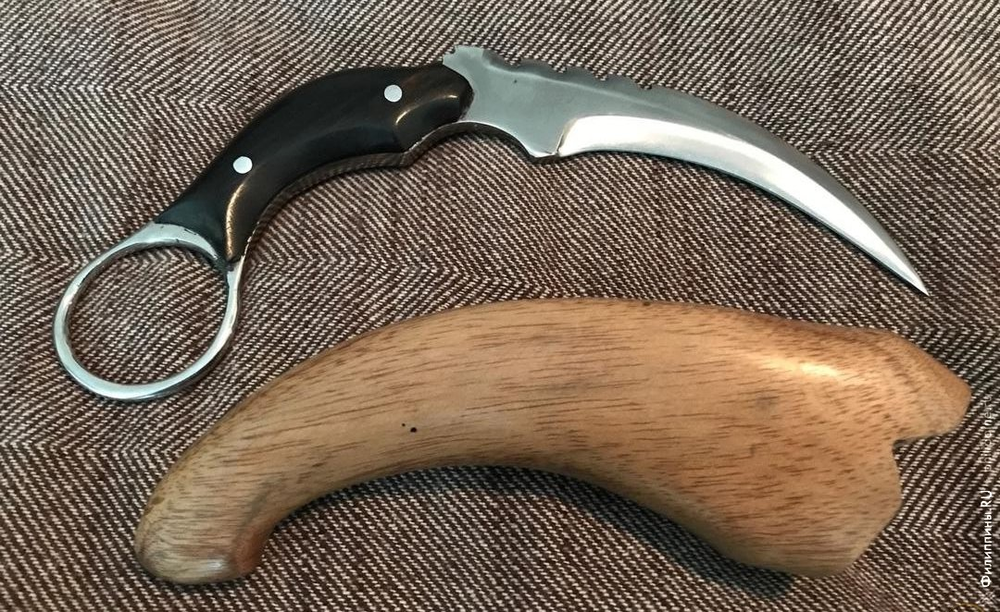
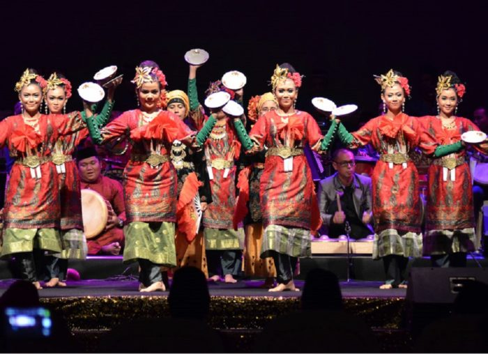
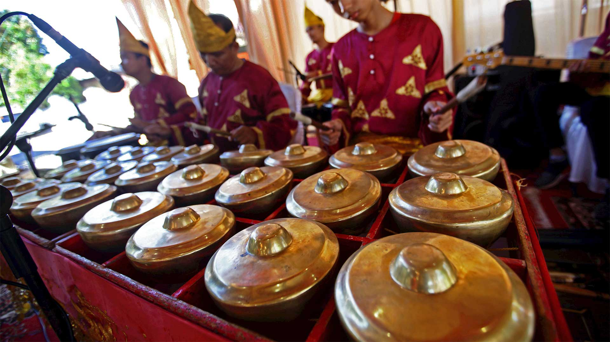
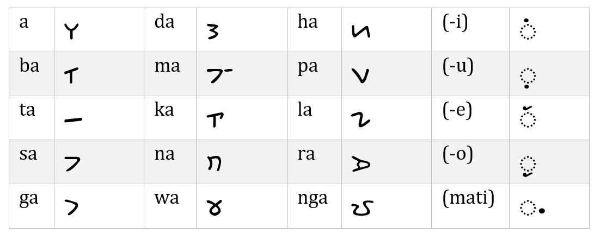
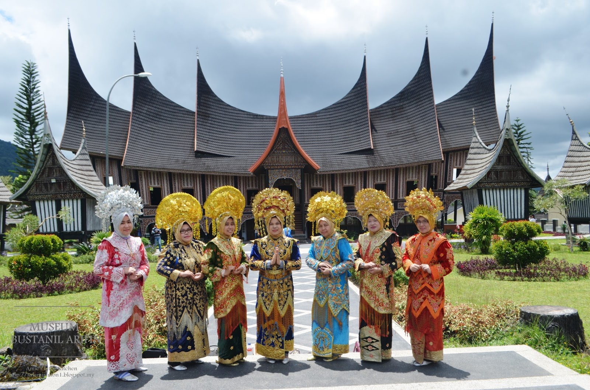
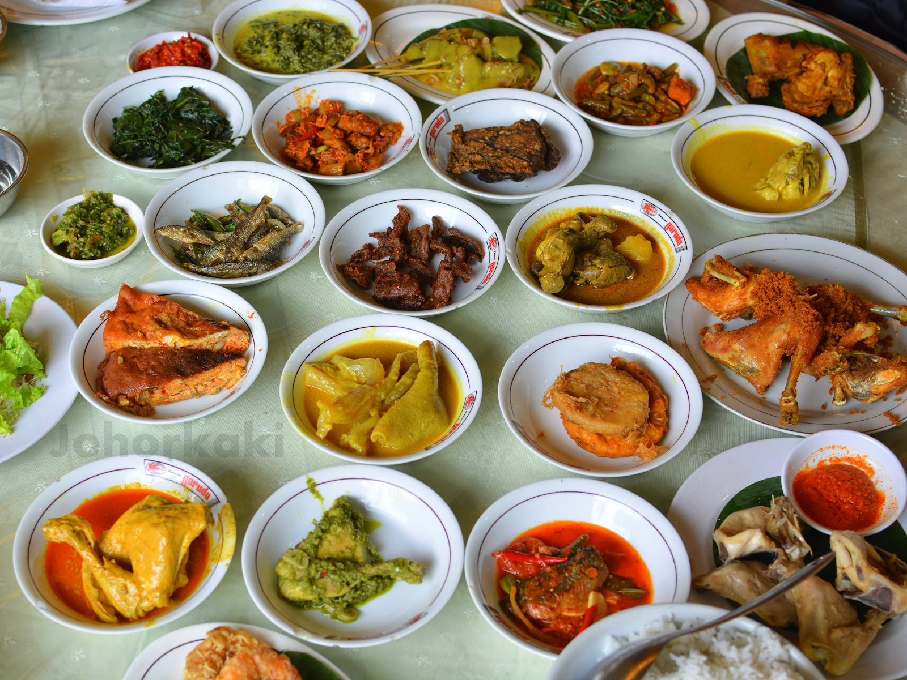
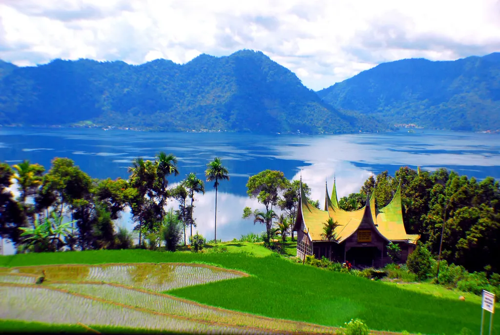

Profil Sumatera Barat
Sumatera Barat (disingkat Sumbar) adalah sebuah provinsi di Indonesia yang terletak di pulau
Sumatera dengan Padang sebagai ibu kotanya. Sesuai dengan namanya, wilayah provinsi ini
menempati sepanjang pesisir barat Sumatera bagian tengah, dataran tinggi Bukit Barisan di
sebelah timur, dan sejumlah pulau di lepas pantainya seperti Kepulauan Mentawai.
Dari utara ke selatan, provinsi dengan wilayah seluas 42.297,30 km² ini berbatasan dengan
empat provinsi, yakni Sumatera Utara, Riau, Jambi, dan Bengkulu.
Sumatera Barat adalah rumah bagi etnis Minangkabau, walaupun wilayah adat Minangkabau
sendiri lebih luas dari wilayah administratif Provinsi Sumatera Barat saat ini.
Provinsi ini berpenduduk sebanyak 4.846.909 jiwa dengan mayoritas beragama Islam.
Provinsi ini terdiri dari 12 kabupaten dan 7 kota dengan pembagian wilayah administratif
sesudah kecamatan di seluruh kabupaten (kecuali Kabupaten Kepulauan Mentawai) dinamakan
sebagai nagari.
Sejarah

Wilayah pesisir barat Sumatera pada zaman VOC dikenal sebagai "Hoofdcomptoir van
Sumatra's westkust". Seiring pengaruh VOC, wilayah ini berkembang menjadi Residentie
Padangsche Benedenlanden dan Residentie Padangsche Bovenlanden.
Pada masa Hindia Belanda, wilayah ini masuk dalam Gouvernement Sumatra's Westkust,
kemudian menjadi Residentie Sumatra's Westkust.
Seiring dengan kejatuhan Kerajaan Pagaruyung, dan keterlibatan Belanda dalam Perang Padri,
pemerintah Hindia Belanda mulai menjadikan kawasan pedalaman Minangkabau sebagai bagian dari
Pax Nederlandica, kawasan yang berada dalam pengawasan Belanda, dan wilayah Minangkabau ini
dibagi atas Residentie Padangsche Benedenlanden dan Residentie Padangsche Bovenlanden.
Pada masa pendudukan Jepang, namanya berubah menjadi Sumatora Nishi Kaigan Shu, dan
Kampar dimasukkan ke dalam wilayah Rhio Shu. Setelah kemerdekaan Indonesia,
wilayah ini termasuk dalam Provinsi Sumatera Tengah. Namun, pada masa PRRI,
Provinsi Sumatera Tengah dibagi menjadi tiga provinsi, termasuk Provinsi Sumatera Barat
dengan ibu kota pertama di Bukittinggi, kemudian berdasarkan Surat Keputusan Gubernur Sumatera Barat No. 1/g/PD/1958,
tanggal 29 Mei 1958 ibu kota provinsi dipindahkan ke Padang.
Suku Budaya
Sumatera Barat memiliki keberagaman suku dan budaya yang menarik.
Beberapa etnis yang terdapat di Provinsi Sumatera Barat pastinya memiliki tradisi atau
kebudayaan yang berbeda-beda satu sama lain. Setiap etnis memiliki keunikan tersendiri
antara satu dengan yang lainnya.
Rumah Adat

Kebudayaan Sumatera Barat adalah perpaduan yang kaya dan beragam dari tradisi, seni, dan nilai-nilai
yang turun-temurun dari generasi ke generasi. Salah satu ciri khasnya adalah rumah adat Gadang,
yang menjadi ikonik dengan atap melengkungnya dan dekorasi ukiran yang khas dari budaya Minangkabau.
Rumah adat ini menjadi simbol kekuatan dan keindahan dalam arsitektur tradisional Sumatera Barat.
alam hal rumah adat, Sumatera Barat memiliki beberapa jenis, termasuk Rumah Gadang jenis Gajah Maharam,
Rumah Gadang Gonjong Limo, hingga Rumah Gadang Surambi Papek, yang semua mengusung ciri khas atap
melengkung dan dekorasi ukiran khas Minangkabau.
Senjata Tradisional

Senjata tradisional Sumatera Barat membawa warisan keberanian dan keanggunan dalam
bentuk yang unik dan khas. Salah satunya adalah kerambit, sebuah senjata yang populer
dengan serangan mematikan yang dapat dilancarkannya. Kemudian, ada karih atau keris,
yang memiliki ciri khas lekukan dan hulu yang indah, mewakili keanggunan dalam keberanian.
Kelewang, dengan bentuk goloknya yang unik, tidak hanya digunakan untuk pertanian saat ini,
tetapi juga merupakan senjata utama dalam perang pada masa lalu, terutama pada zaman perang
Padri di awal abad ke-19. Ruduih, senjata berbentuk pedang dengan sisi bilah yang cembung
ke dalam, memberikan sentuhan tradisional yang kuat dalam pertempuran.
Dan terakhir, piarik atau tombak, yang memiliki tiga mata tajam, menunjukkan kehebatan
dan ketajaman dalam pertarungan. Kesemuanya mencerminkan keberanian dan kekuatan,
serta menjadi bagian penting dari warisan budaya dan sejarah Sumatera Barat.
Tarian Daerah

Kesenian tradisional Sumatera Barat memberikan gambaran yang kaya akan warisan budaya dan
keindahan seni yang turun-temurun diwariskan dari generasi ke generasi. Salah satu wujudnya
adalah dalam bentuk tarian adat yang mempesona, seperti tari lilin yang menampilkan gerakan
gemulai yang dipadu dengan iringan musik yang lembut. Tidak ketinggalan tarian Paten yang
menjadi perwujudan rasa syukur masyarakat Minang dalam menyambut panen padi.
Selain itu, tari Pasambahan Minang menjadi ungkapan kegembiraan dalam menyambut tamu penting
dari jauh, sementara tari Piring menghadirkan kesakralan dalam sebuah tarian ritual.
Tidak hanya itu, tarian Randai memukau dengan perpaduan gerakan Silek dan syair gurindam
yang indah.
Kesenian Musik

Selain tarian, alat musik tradisional Sumatera Barat turut memperkaya kekayaan seni
daerah ini. Mulai dari bansi dan saluang yang menghasilkan melodi merdu hingga gendang
tabuik yang memperkaya irama tarian adat. Pupuik batang padi dan pupuik tanduak menambah
nuansa klasik dalam pertunjukan musik tradisional, sementara rabab dan serunai memberikan
sentuhan misteri dan keanggunan. Tidak ketinggalan, talempong dan tambua menampilkan
keindahan yang memukau dengan dentingan yang khas. Aguang dan tansa memberikan sentuhan
dramatis dalam iringan musik tradisional, sementara sampelong menampilkan keunikan
tersendiri dengan bunyi aerofon yang khas. Semua alat musik ini tidak hanya mengiringi
tarian, tetapi juga menggambarkan kekayaan budaya dan keindahan seni tradisional Sumatera
Barat yang memikat hati setiap penikmatnya.
Bahasa Daerah

Bahasa yang digunakan oleh penduduk Sumatera Barat dalam kehidupan sehari-hari adalah bahasa Minangkabau
Dari segi penyebaran wilayah di Provinsi Sumatera Barat, Bahasa Minangkabau mendominasi baik
dari segi luas wilayah maupun jumlah penduduk. Bahasa ini menjadi bahasa utama yang
digunakan sehari-hari oleh masyarakat Sumatera Barat. Dalam bahasa sehari-hari,
Bahasa Minangkabau sering kali disebut sebagai bahasa Minang. Provinsi Sumatera Barat
memiliki lima dialek Bahasa Minangkabau yang berbeda, di antaranya adalah Dialek
Agam-Tanah Datar, Koto Baru, Pasaman, Pancung Soal, dan Lima Puluh Kota.
Dari kelima dialek tersebut, Dialek Agam-Tanah Datar adalah yang paling umum
digunakan oleh masyarakat Sumatera Barat, terutama di ibu kota provinsi, Padang.
Sebagai contoh, jika ditanya tentang bahasa daerah di Sumatera Barat,
jawabannya adalah Bahasa Minangkabau dengan dialek Agam-Tanah Datar.
Lagu-lagu daerah dan syair-syair umumnya juga menggunakan Bahasa Minangkabau sebagai
bahasa pengantar. Bahasa Minangkabau tidak hanya terbatas di Sumatera Barat, tetapi juga
telah menjadi bagian dari bahasa daerah di provinsi lain seperti Aceh,
Sumatera Utara, Riau, Jambi, dan Bengkulu. Secara etimologis, "Minangkabau" memiliki
arti meminang kerbau atau mengawinkan kerbau, namun memiliki sejarah dan makna yang lebih luas.
Pakaian Adat

Pakaian adat Sumatera Barat adalah warisan budaya yang kaya akan makna dan keindahan seni rupa.
Pakaian pengantin Padang, dengan deta sebagai penutup kepala yang indah dan perhiasan yang
melambangkan status sosial, menjadi contoh nyata dari keanggunan dan kekayaan tradisi ini.
Salempang, sasampiang, lambak, cawek, dan baju Batabue juga menjadi bagian tak terpisahkan yang
melengkapi keseluruhan pakaian adat, sementara keris dan tongkat menambahkan sentuhan keberanian
dan keadilan dalam tradisi lokal. Dengan begitu, pakaian adat Sumatera Barat bukan hanya sekadar
busana, melainkan juga penjaga dan pewaris nilai-nilai luhur budaya Minangkabau.
Di samping itu, pakaian adat juga mengandung makna simbolis yang mendalam dalam menjaga kesatuan
dan keharmonisan masyarakat. Lambak, sarung khas Sumatera Barat, dan tengkuluk sebagai penutup
kepala wanita, bukan hanya sebagai pakaian praktis, tetapi juga melambangkan keselarasan dalam
kehidupan sehari-hari. Aksesori seperti keris dan tongkat, yang dihiasi dengan ukiran indah,
tidak hanya menambah keindahan visual tetapi juga menyiratkan nilai-nilai keberanian dan keadilan
yang dianut dalam tradisi lokal. Dengan demikian, pakaian adat Sumatera Barat memainkan peran penting sebagai
penjaga dan penerus nilai-nilai budaya yang patut dijunjung tinggi oleh generasi masa kini dan
mendatang.
Makanan Khas

Kuliner khas Padang, Sumatera Barat, dikenal akan kelezatan dan kekhasannya yang menggugah
selera. Salah satu hidangan paling terkenal adalah rendang, daging sapi yang dimasak dengan
rempah-rempah kaya hingga lembut dan meresap, dinobatkan sebagai salah satu makanan terenak
di dunia oleh CNN. Dendeng, daging sapi yang dijemur dan dibumbui rempah-rempah, menawarkan
tekstur yang keras dan rasa yang khas. Nasi lemak, disajikan dalam upacara khusus, dimasak
dengan kayu bakar dan dibumbui kunyit, menghasilkan rasa yang istimewa. Soto Padang, dengan
kuah bening dan daging sapi yang diolah menjadi dendeng, serta Sate Padang dengan bumbu
kuning khasnya, menawarkan pengalaman kuliner yang unik. Gulai Gajeboh, menggunakan daging
sapi bagian punuk, dikenal dengan rasa istimewanya meski tinggi kolesterol.
Ragam hidangan ini menunjukkan kekayaan kuliner Padang yang memikat dan selalu membuat
ingin kembali menikmatinya.
Wisata Alam

Sumatera Barat merupakan sebuah provinsi di Pulau Sumatera, Indonesia, yang dikenal akan
keindahan alamnya yang menakjubkan dan beragam, menjadikannya surga bagi para pecinta alam
dan petualang. Dari keelokan pantai-pantai di Pesisir Selatan yang mempesona dengan pasir
putihnya yang halus dan ombak yang menantang bagi para peselancar, hingga keindahan
pegunungan yang hijau di Bukittinggi dengan udara sejuknya yang menyegarkan,
provinsi ini menawarkan sebuah pengalaman wisata alam yang kaya dan memuaskan.
Pantai Mandeh, sering disebut sebagai Raja Ampat-nya Sumatera, merupakan salah satu
dari sekian banyak pantai di Pesisir Selatan yang menawarkan pemandangan laut
yang luar biasa dengan airnya yang kristal jernih dan kehidupan bawah laut yang kaya,
ideal untuk aktivitas snorkeling dan diving, atau sekadar menikmati keindahan matahari
terbenam yang memukau.
Lebih ke dalam daratan, Ngarai Sianok di Bukittinggi menyuguhkan
panorama lembah dan jurang yang spektakuler dengan hijaunya pemandangan alam yang terhampar
luas, sementara Danau Maninjau, sebuah danau vulkanik yang tenang, menawarkan ketenangan
dan kesempatan untuk menikmati pemandangan alam yang indah dengan berkeliling danau,
mengunjungi desa-desa tradisional di sekitarnya. Dengan keindahan alam yang lengkap dan
beragam mulai dari pantai, gunung, lembah, danau, hingga air terjun,
Sumatera Barat memiliki keunikan tersendiri yang siap memikat hati setiap pengunjung,
menjadikannya destinasi yang sempurna bagi mereka yang mencari petualangan, ketenangan,
atau sekadar ingin menikmati keindahan alam yang luar biasa.